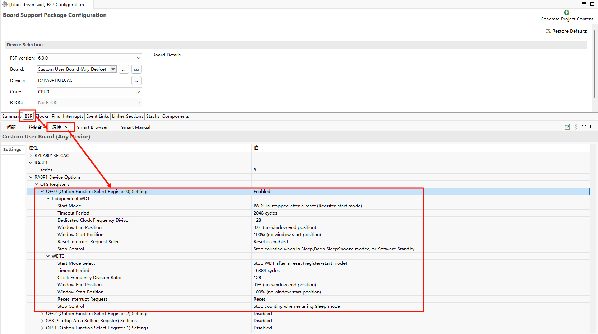

RA8P1 Titan Board WDT 使用说明
中文 | English
简介
看门狗设备可以保证我们的代码在我们的预期中进行，可以有效防止我们的程序因为一些其它不可控因素导致代码”跑飞“；本例程主要介绍了如何在 Titan Board 上使用窗口 WDT 设备;
硬件说明
无
FSP配置说明
打开 FSP 工具 新建 Stacks 选择 r_wdt：

**注意：**使用 WDT 需要使能 OFS0 寄存器配置。

RT-Thread Settings配置

示例工程说明
示例程序位于 projects/Titan_driver_wdt/src/hal_entry.c。
/*
* Copyright (c) 2006-2024, RT-Thread Development Team
*
* SPDX-License-Identifier: Apache-2.0
*
* Change Logs:
* Date Author Notes
* 2024-03-11 Wangyuqiang first version
*/
#include <rtthread.h>
#include "hal_data.h"
#include <rtdevice.h>
#include <board.h>
#define DBG_TAG "wdt"
#define DBG_LVL DBG_LOG
#include <rtdbg.h>
#define WDT_DEVICE_NAME "wdt" // 默认看门狗设备名，视 BSP 而定
#define WDT_FEED_INTERVAL 1000 // 喂狗间隔（单位 ms）
#define WDT_TIMEOUT 3 // 看门狗超时时间（单位 s）
static rt_device_t wdt_dev = RT_NULL;
static rt_thread_t feed_thread = RT_NULL;
#define LED_PIN_0 BSP_IO_PORT_06_PIN_00 /* Onboard LED pins */
void hal_entry(void)
{
rt_kprintf("\nHello RT-Thread!\n");
rt_kprintf("==================================================\n");
rt_kprintf("This example project is an driver wdt routine!\n");
rt_kprintf("==================================================\n");
LOG_I("Tips:");
LOG_I("You can run wdt testcase by executing the instruction: \'wdt_sample\'");
while (1)
{
rt_pin_write(LED_PIN_0, PIN_HIGH);
rt_thread_mdelay(1000);
rt_pin_write(LED_PIN_0, PIN_LOW);
rt_thread_mdelay(1000);
}
}
static void feed_dog_entry(void *parameter)
{
int count = 0;
while (1)
{
if (count < 10)
{
rt_device_control(wdt_dev, RT_DEVICE_CTRL_WDT_KEEPALIVE, RT_NULL);
LOG_I("[FeedDog] Feeding watchdog... %d", count);
}
else
{
LOG_E("[FeedDog] Simulate exception! Stop feeding.");
}
count++;
rt_thread_mdelay(WDT_FEED_INTERVAL);
}
}
static int wdt_sample(void)
{
rt_err_t ret;
wdt_dev = rt_device_find(WDT_DEVICE_NAME);
if (wdt_dev == RT_NULL)
{
LOG_E("Cannot find %s device!", WDT_DEVICE_NAME);
return -1;
}
ret = rt_device_control(wdt_dev, RT_DEVICE_CTRL_WDT_START, RT_NULL);
if (ret != RT_EOK)
{
LOG_E("Start watchdog failed!");
return -1;
}
LOG_I("Watchdog started...", WDT_TIMEOUT);
feed_thread = rt_thread_create("feed_dog", feed_dog_entry, RT_NULL, 1024, 10, 10);
if (feed_thread != RT_NULL)
rt_thread_startup(feed_thread);
return 0;
}
MSH_CMD_EXPORT(wdt_sample, wdt_sample);
编译&下载
RT-Thread Studio：在 RT-Thread Studio 的包管理器中下载 Titan Board 资源包，然后创建新工程，执行编译。
编译完成后，将开发板的 Jlink 接口与 PC 机连接，然后将固件下载至开发板。
运行效果
在终端输入 wdt_sample 指令运行 WDT 测试程序，在喂狗 10 次后停止喂狗，模拟了程序异常情况。

引用参考
设备与驱动：WDT 设备